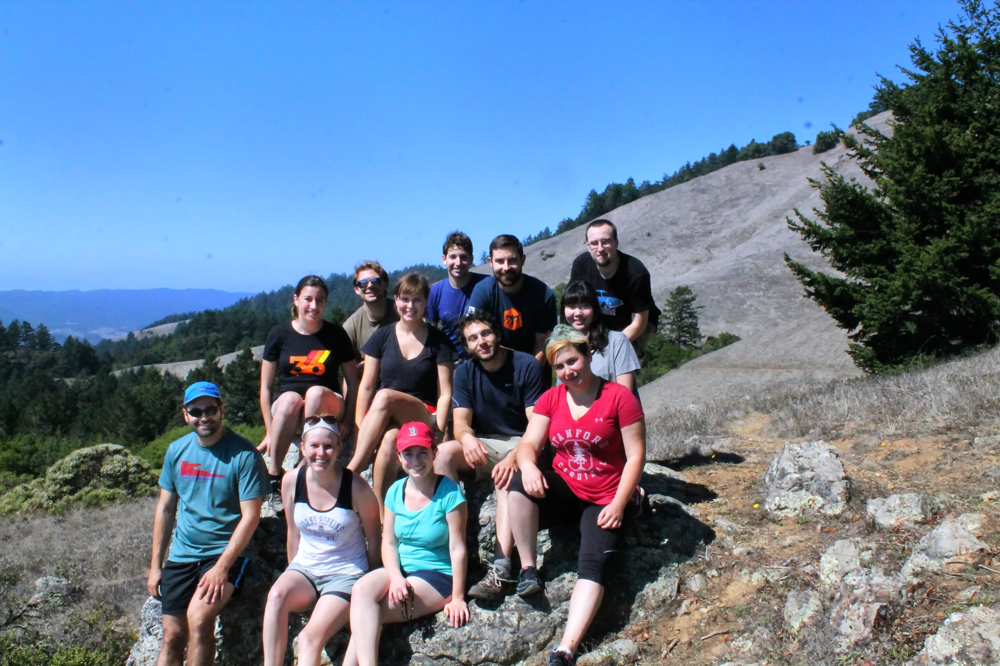
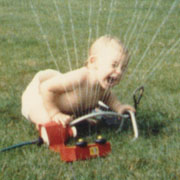
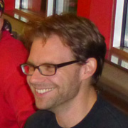
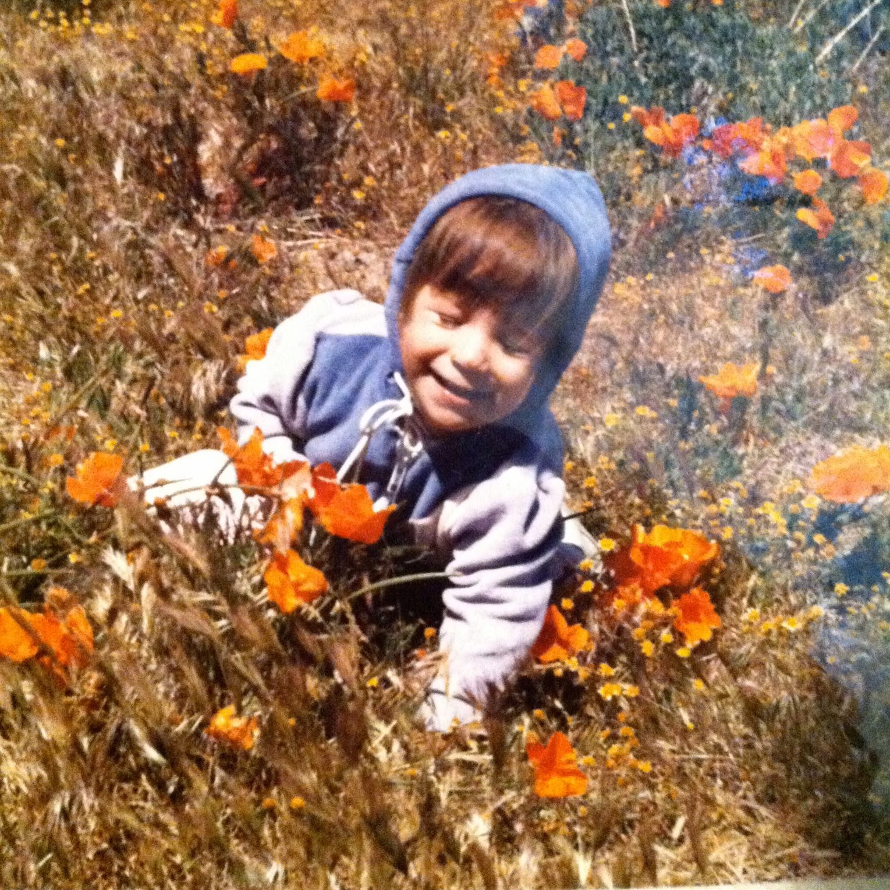
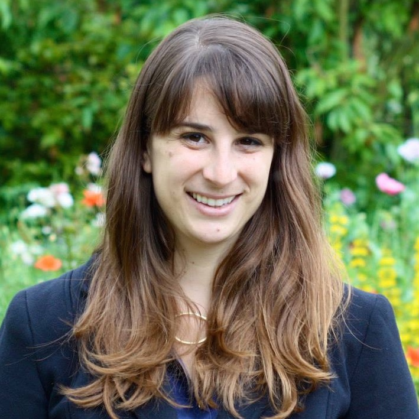
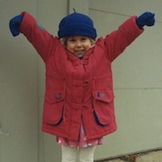
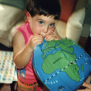
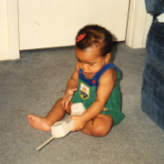
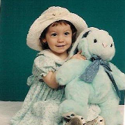
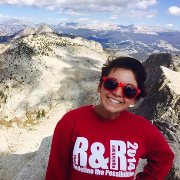

Language and Cognition Lab Spring 2016
Principal Investigator
Michael C. Frank (blog, twitter)
Mike did his undergraduate degree at Stanford in Symbolic Systems and his PhD work at MIT. He is broadly interested in the relationship between language and cognition, especially as it relates to children's early language development.
Mike did his undergraduate degree at Stanford in Symbolic Systems and his PhD work at MIT. He is broadly interested in the relationship between language and cognition, especially as it relates to children's early language development.
Postdocs


Gabe Doyle
Gabe did his graduate work in linguistics at UC San Diego, and his undergraduate work in math at Princeton. He focuses on computational models of language acquisition, especially for word segmentation and constraint-based phonology, as well as using social media to investigate pragmatics and dialect geography.
Gabe did his graduate work in linguistics at UC San Diego, and his undergraduate work in math at Princeton. He focuses on computational models of language acquisition, especially for word segmentation and constraint-based phonology, as well as using social media to investigate pragmatics and dialect geography.


Emily Hembacher
Emily did her undergraduate work at UC San Diego, and her graduate work at UC Davis. She is interested in how children’s monitoring of their own uncertainty, and uncertainty in their environment, impacts their learning and decision-making. In addition to this line of work, she has recently begun to examine how parents’ understanding of cognitive development interacts with children’s learning.
Emily did her undergraduate work at UC San Diego, and her graduate work at UC Davis. She is interested in how children’s monitoring of their own uncertainty, and uncertainty in their environment, impacts their learning and decision-making. In addition to this line of work, she has recently begun to examine how parents’ understanding of cognitive development interacts with children’s learning.
Graduate Students

Molly Lewis
Molly completed a B.A. in Linguistics at Reed College in 2009 and then spent two years as a lab manager in Duane Watson's lab at the University of Illinois at Urbana-Champaign. Her research explores the relationship between the form of a word and its meaning at two different timescales: language acquisition and language evolution.
Molly completed a B.A. in Linguistics at Reed College in 2009 and then spent two years as a lab manager in Duane Watson's lab at the University of Illinois at Urbana-Champaign. Her research explores the relationship between the form of a word and its meaning at two different timescales: language acquisition and language evolution.
Erica Yoon
Erica completed a B.A.Sc. in Cognitive Science at McGill University. She worked in the Onishi lab, studying infants’ speech segmentation, as well as adults’ interpretation of ambiguous sentences in Korean. She is currently interested in looking at people’s understanding of polite speech, and its developmental trends and cultural variations.
Erica completed a B.A.Sc. in Cognitive Science at McGill University. She worked in the Onishi lab, studying infants’ speech segmentation, as well as adults’ interpretation of ambiguous sentences in Korean. She is currently interested in looking at people’s understanding of polite speech, and its developmental trends and cultural variations.

Kyle MacDonald
Kyle graduated from Wesleyan University with a B.A. in Psychology in 2010. He is intersted in understanding the importance of social information for language learning. Currently, he is exploring how joint attention supports learning across different contexts and language modalities (spoken vs. signed languages).
Kyle graduated from Wesleyan University with a B.A. in Psychology in 2010. He is intersted in understanding the importance of social information for language learning. Currently, he is exploring how joint attention supports learning across different contexts and language modalities (spoken vs. signed languages).
Research Staff

Danielle Kellier
Danielle is the current lab manager. She graduated from New York University with a B.A. in Biology. She previously worked in the Adolph lab, studying whether children could discover the hidden possible actions of everyday objects.
Danielle is the current lab manager. She graduated from New York University with a B.A. in Biology. She previously worked in the Adolph lab, studying whether children could discover the hidden possible actions of everyday objects.


Veronica Cristiano
Veronica completed her undergraduate studies at The Pennsylvania State University and is exploring options for further graduate study. She is interested in both typical and atypical language development, more specifically the relationship between spatial cognition and signed languages, as well as word flexibility and questions of theory of mind.
Veronica completed her undergraduate studies at The Pennsylvania State University and is exploring options for further graduate study. She is interested in both typical and atypical language development, more specifically the relationship between spatial cognition and signed languages, as well as word flexibility and questions of theory of mind.
Lab Alums
- Dan Yurovsky (Postdoctoral Fellow) - Assistant Professor, University of Chicago
- Rose Schneider (Research Assistant) - Grad student, UPenn
- Mika Braginsky (Research Assistant) - Grad student, MIT
- Ann Nordmeyer (Graduate Student) - Assistant Professor, Southern New Hampshire University
- Sarah James (Research Assistant)
- Andrew Weaver (Research Assistant)
- Alexandra Horowitz (Graduate Student) - UI Researcher, Facebook
- Ally Kraus (Research Assistant) - Analyst, Education Elements
- Janelle Klaas (Research Assistant)
- Theresa Hennings (Research Assistant) - Graduate student, University of Washington
- Stephan Meylan (Research Assistant) - Grad student, UC Berkeley
- Chigusa Kurumada (Graduate Student) - Assistant Professor, University of Rochester
- Marisa Casillas (Research Assistant) - postdoc, Max Planck Institute for Psycholinguistics, Nijmegen
- Alex Stiller (Master's Student) - Instructor, San Diego Mesa College
Former Honors Students
- Allison Dods (2016) - Symbolic Systems
- Sarah Lucy Case (2015) - Human Biology
- Rachel Chung (2015) - Science, Technology, and Society
- Nicholas Moores (2015) - Linguistics
- Elise Sugarman (2014) - Symbolic Systems
- Laura Soriano (2014) - Human Biology
- Kaia Simmons (2013) - Human Biology
- Stephanie Muscat (2013) - Human Biology
- Rebecca Chung (2012) - Symbolic Systems